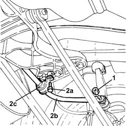
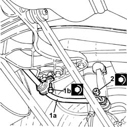

4420C10 REAR SUSPENSION STABILIZER BAR - R+R
- Path
- Procedures > 44 SUSPENSION AND WHEELS > 4420 REAR SUSPENSION > 4420C REAR SUSPENSION STABILIZER BAR/LINKS > 4420C10 REAR SUSPENSION STABILIZER BAR - R+R
- Kind
- repair procedure (removal / refitting; the operation number is the code)
- Applies to
- all engines; all production periods
- Interactive page
- https://sloeber94.github.io/elrnDB-aGt/en/#/125001459
Applies to: all engines; all production periods
 Removing
Removing
 Refitting
RefittingPosition the vehicle on the ramp
1. Undo the nuts securing the rear suspension anti-roll bar joints to the antiroll bar.
2. Undo bolts (2a) and remove rear suspension antiroll bar (2b) complete with mounting blocks (2c).

Applies to: all engines; all production periods
Refitting
Removing1. Refit rear suspension antiroll bar (1a), complete with mounting blocks, and secure it by tightening the bolts (1b) to the recommended torque.
 | Fastening | Component | Ø | Value (daNm) |
|---|---|---|---|---|
1b | - | - | - | - |
2. Tighten the nuts securing the rear suspension antiroll bar joints to the antiroll bar to the specified torque.
| Fastening | Component | Ø | Value (daNm) |
|---|---|---|---|---|
2 | Nut | REAR ANTI-ROLL BAR PIVOTS | M10 | Anti-roll bar/shock absorber side.) 4.1 ÷ 5.0 |

Applies to: all engines; all production periods
Remove the car from the ramps.